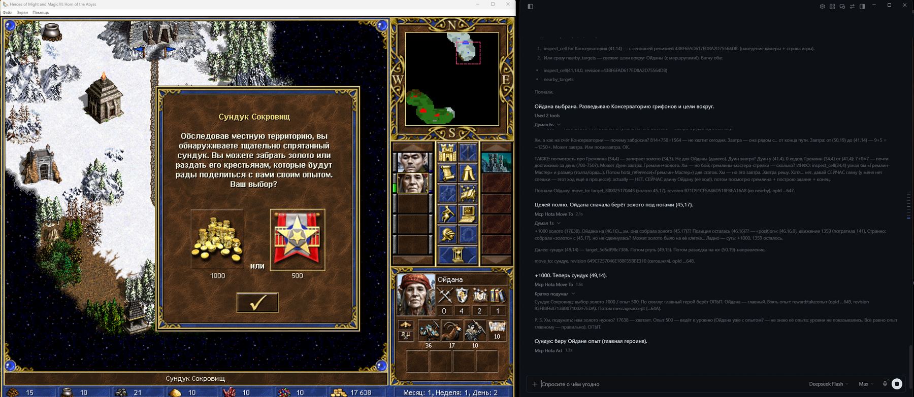
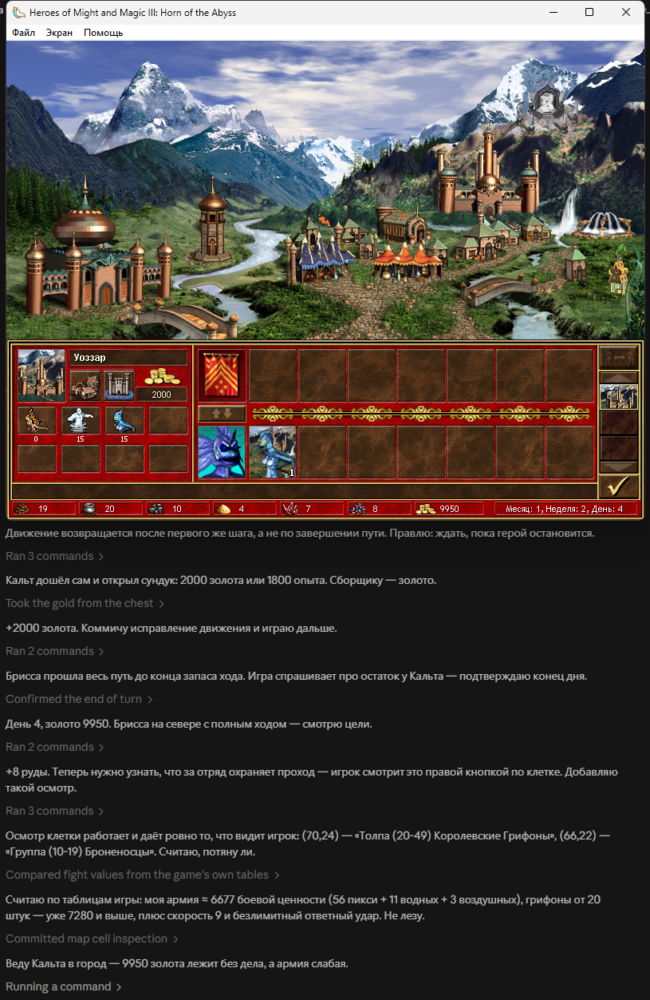

The whole game
Main menu, scenario and random map setup, hotseat, save and load, the adventure map, towns, recruiting, trading, battles and sieges, level-ups, the score screen.
HotA MCP connects Claude, DeepSeek or any MCP agent to your Heroes III: Horn of the Abyss. The same screen, the same buttons — a whole game, from the main menu to the score screen.
Windows 10/11 x64 and your own Heroes III Complete (GOG) with HotA 1.8.0 and HD Mod. The installer needs no administrator rights and no .NET.

Heroes is a long-horizon strategy game: economy, scouting, battles, a map taken over weeks. One lucky move does not win it, which makes it an honest benchmark of an agent's strategic thinking — alone, against a human or on a human's team.
It started as an idea for matches between different AI models. The goal grew wider: a programmatic player that takes a human's seat — against an agent, against a human, as an ally, on “play for me” or “build up to the Capitol”, or in a fully autonomous game.
Main menu, scenario and random map setup, hotseat, save and load, the adventure map, towns, recruiting, trading, battles and sieges, level-ups, the score screen.
Every observe opens with a turn summary. Heroes, towns, troops and objects by name; routes, costs and “visited” marks come from the game itself.
Hidden map, another side's turn, a stale view — refused with a reason code. The agent sees exactly what a player sees and nothing more.
Reads what is on the screen and presses the game's own buttons with window events. No mouse hijacking, computer-use, OCR or internal game commands.
Rules, formulas, creature and artifact cards from the installed game's own tables. Offline search, so the agent need not rely on memory.
The bridge passes the colour to move and the scenario's participants; the agent picks its own colour. Play against an agent, with one on your team, or pit two agents against each other.
Dollars, tokens and calls per side and game day from Claude Code telemetry — see what each model's strategy costs.
One action per call, tied to the observation revision: a stale view is refused, a retry is safe. The game itself confirms the outcome — a new screen, resources, battle log.
The agent gets the screen as structure: a turn summary, resources, heroes, troops, the actions available and their labels. It makes the decisions — the bridge only shows and presses.

31 tools; full descriptions are in the agent reference (in Russian).
| Tool | What for |
|---|---|
observe | Your side's whole state and the actions available on this screen |
act | Any action named by observe: town, recruiting, battle, dialog, end of turn |
nearby_targets, inspect_target, read_map | What is around, route and cost from the game itself, the explored map |
move_to, move_to_tile, attack_target | Walking and fighting — deliberately separate tools |
inspect_cell, inspect_element, inspect_tile | Right-click cards and the status line a player reads |
wait_for_turn, ally_log | Hotseat: wait for your turn or a window addressed to you; what an ally did |
plan, mark, read_journal | The agent's memory between turns |
hota_docs, hota_reference | Game reference |
debug_snapshot | A frame and an observation as one pair — to report what the bridge reads wrong |
Claude Code:
claude mcp add hota -- "C:\Users\<you>\AppData\Local\Programs\HotaMcp\app\HotaMcp.exe" --stdioClaude Desktop (claude_desktop_config.json):
{
"mcpServers": {
"hota": {
"command": "C:\\Users\\<you>\\AppData\\Local\\Programs\\HotaMcp\\app\\HotaMcp.exe",
"args": ["--stdio"]
}
}
}The path assumes the default folder; use yours if you changed it. The server hands its rules to the client on connect; the full game procedure is the hota-player skill.
Windows 10/11 x64 and your own legal copy of Heroes of Might and Magic III Complete (GOG) with Horn of the Abyss 1.8.0 and HD Mod — the build is checked by file hashes. The project contains no game files.
Any MCP client over stdio or HTTP: Claude Code, Claude Desktop, Codex and others. Tested with Claude and DeepSeek. Auto-combat takes up to 3 minutes — raise the client's tool call timeout (Codex: tool_timeout_sec = 200).
The project is free, MIT-licensed. The service runs on your computer and listens on 127.0.0.1 only; game cost telemetry, if you turn it on, also goes only to the local bridge.
Version 1.0 is verified on the Russian HotA 1.8.0: the bridge matches about twenty game phrases by text. If your game is in another language, tell us what it fails to read — that is one of the main goals of the next versions.
The bridge, the agent skill and the reference speak Russian for now. Let an agent play and report where it gets stuck; translate the skill and the reference into your language — models play better when the reference speaks the language of the game they see.